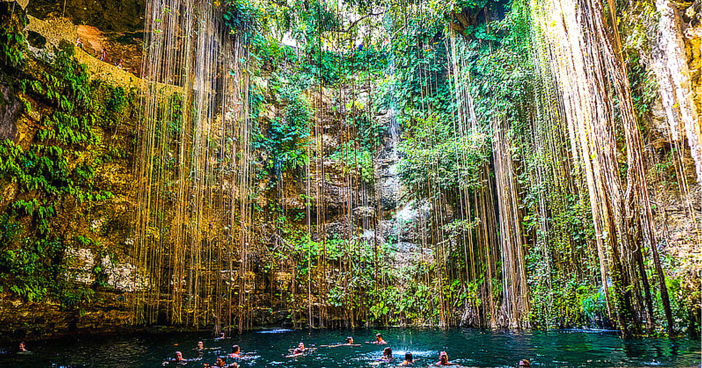
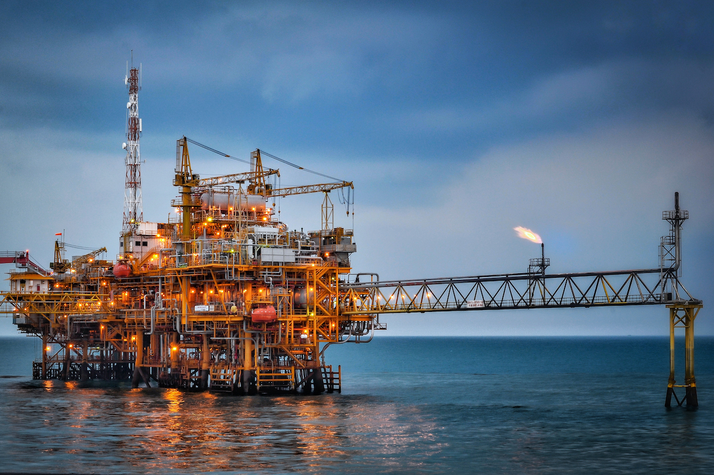
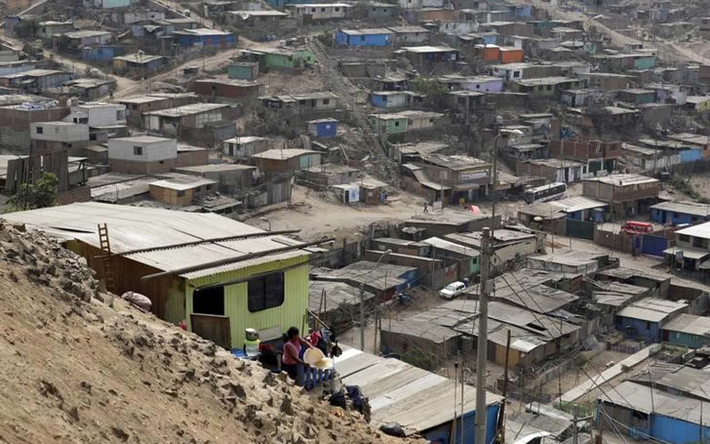
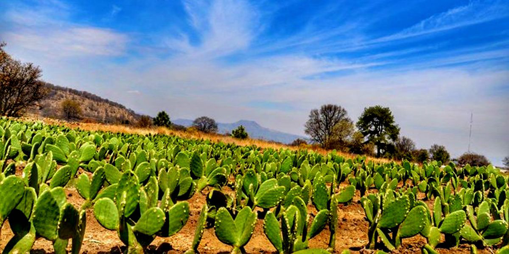
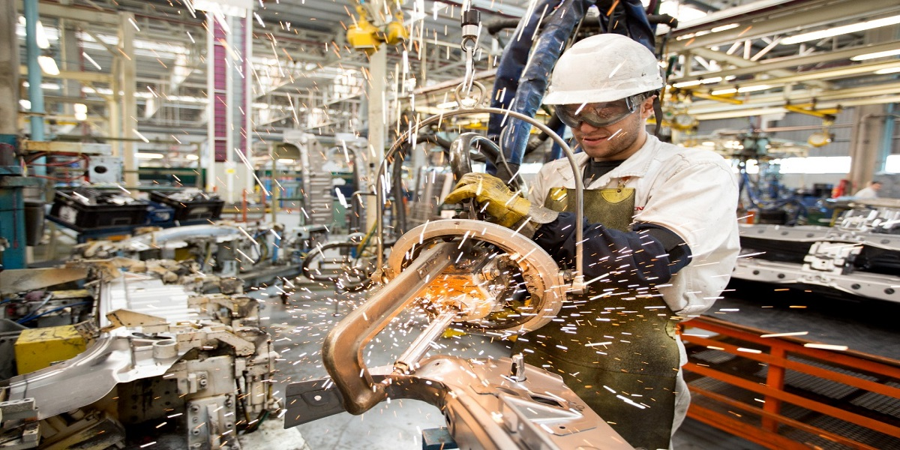
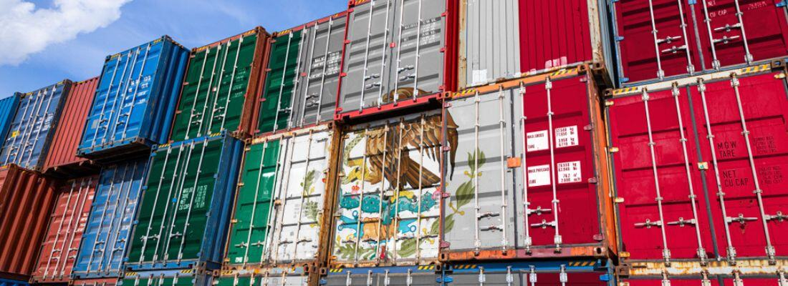

Recursos Naturales
Patrimonio biofísico, presiones ambientales y desafíos sociales del país

1.1
Recursos Renovables
Se regeneran de forma natural en escalas de tiempo humanas. México posee una enorme biodiversidad y potencial energético limpio.

1.2
Recursos No Renovables
Se forman en millones de años y su extracción supera la tasa de regeneración natural. Son base de la industria energética y minera.

1.3
Problemas Ambientales
La presión sobre los ecosistemas provoca degradación acelerada que amenaza la disponibilidad futura de recursos.

1.4
Población y Problemática Social
Las condiciones demográficas y sociales determinan la presión sobre los recursos y el modelo de desarrollo del país.
1.4.1 — Pobreza
- Más de 46 millones en situación de pobreza
- Brecha urbana-rural significativa
- Pobreza multidimensional: ingresos, educación, salud
- Comunidades indígenas con mayor vulnerabilidad
1.4.2 — Desempleo
- Tasa de desempleo abierto ~3 % (subestimada)
- Alta subocupación y empleo precario
- Brecha de género en participación laboral
- Desempleo juvenil estructural persistente
1.4.3 — Economía Informal
- Representa ~55 % de la ocupación total
- Baja productividad y sin prestaciones sociales
- Dificulta la recaudación fiscal
- Alta concentración en comercio y servicios
Superficie forestal
65.7M ha
Producción de petróleo
1.8M b/d
Especies endémicas
~17kspp
Población total
130M
Informalidad laboral
55%
Sectores Económicos
Necesidades y áreas estratégicas de desarrollo para México

2.1
Desarrollo Agropecuario
El campo mexicano enfrenta la necesidad de modernización tecnológica, acceso a crédito y mejores canales de comercialización.

2.2
Desarrollo Industrial
La industria es motor del empleo formal y de las exportaciones. La manufactura avanzada y el nearshoring representan oportunidades clave.

2.3
Desarrollo de Servicios
Los servicios representan más del 60 % del PIB. Su desarrollo equitativo es indispensable para la calidad de vida y la cohesión social.
2.3.1 — Transporte
- Red carretera: 430,000 km
- Expansión del ferroviario de carga
- Aeropuertos y puertos marítimos clave
- Movilidad urbana sustentable
2.3.2 — Telecomunicaciones
- Cobertura 4G/5G en zonas rurales
- Internet para Todos (CFE Telecom)
- Brecha digital por cerrar
- Economía digital en expansión
2.3.3 — Vivienda
- Déficit habitacional de ~9 millones
- Programas de vivienda social (INFONAVIT)
- Rezago en zonas indígenas y rurales
- Vivienda resiliente ante desastres
2.3.4 — Agua y Alcantarillado
- Cobertura agua potable: ~93 %
- Saneamiento de aguas residuales pendiente
- Estrés hídrico en el norte y centro
- Modernización de redes urbanas
2.4
Educación
Pilar del desarrollo humano y la competitividad. México invierte ~3.3 % del PIB en educación, con rezagos en calidad y cobertura superior.
PIB Servicios
62%
Cobertura agua
93%
Inversión educativa
3.3% PIB
Exportaciones manuf.
90%
Red carretera
430kkm